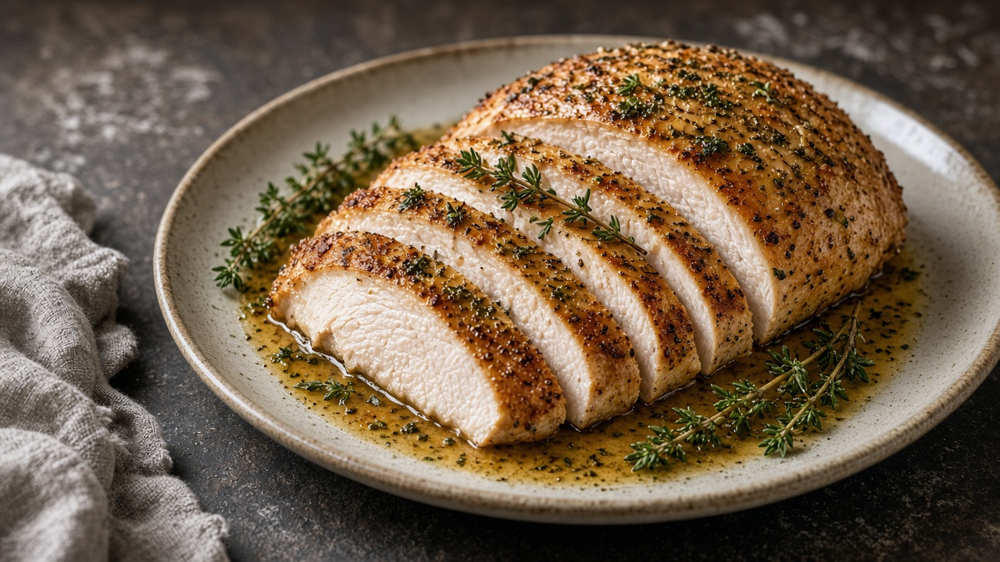

- Recipes
- New England
Dry-Brined Herb Turkey Breast
An overnight dry brine with Turkey Brine Blend seasons the meat all the way through — no bucket required.
- Serves
- 6–8
- Prep
- 20 min
- Cook
- 1 hr 45 min
- Total
- 14 hr 5 min
Method
- Pat the turkey dry. Rub the Turkey Brine Blend all over, working some under the skin.
- Set it on a rack over a tray and refrigerate, uncovered, for 12–24 hours.
- Heat the oven to 350°F. Mash the butter with the sage and thyme and rub it over the skin. Put the orange and stock in the roasting pan.
- Roast 1½–2 hours, until an instant-read thermometer in the thickest part reads 165°F.
- Rest 20 minutes before carving, and spoon the pan juices over.